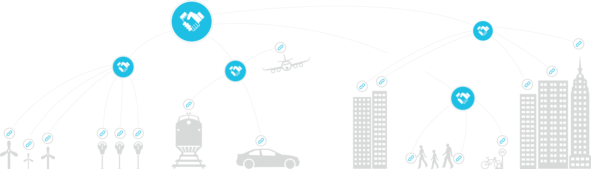
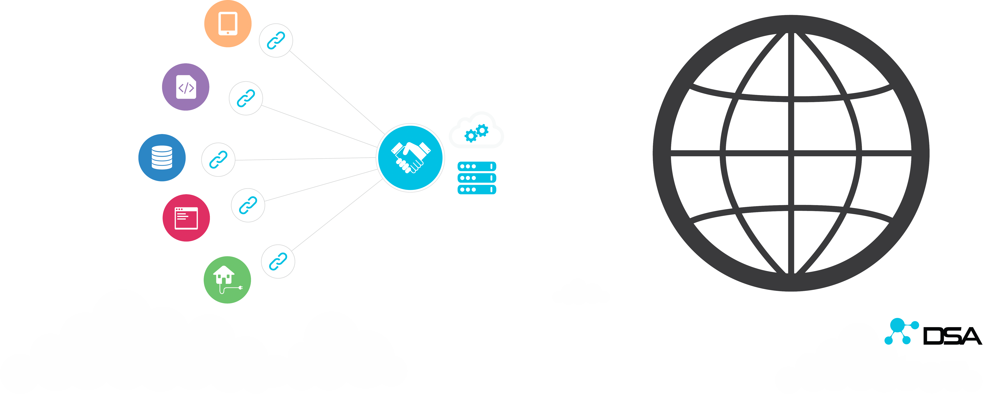

The Internet of Things (IoT) is defined as uniquely identifiable objects and their virtual representations in a connected, internet-like structure. The purpose for the existence of IoT is to ultimately have a fully connected world in which all objects are interoperable with one another regardless of manufacturer, specific device characteristics or functionality. This interoperability enables each object to exchange information amongst, affect the state of and augment behavior of itself or other objects in the ecosystem based on a certain set of criteria and configuration parameters.

As the amount of connected objects increases exponentially, so does the variation in their communication methods, configuration parameters and security implementations causing the inability of various objects to be compatible with one another and creating siloed networks of like objects. For a truly connected world, it is important to break down the barriers that inhibit unconstrained interoperability.
The objective of the Distributed Services Architecture is to unify the disparate devices, services and applications into a structured and adaptable real-time data model. The premise of the open-source DSA initiative is to build a community of manufacturers, makers and solution providers that will contribute to an ever-expanding library of Distributed Service Links which allow protocol translation and data integration to and from 3rd party data-sources.
Benefits of DSA
DSA allows for purpose-built products and services (i.e. DSLinks) to interact with one another in a decentralized manner. This architecture enables a network architect to distribute functionality between discrete computing resources. A network topology consisting of multiple DSLinks running on edge devices connected to a tiered hierarchy of brokers allows the system as a whole to be scalable, resilient to failure and take advantage of all computing resources available to it from the edge, the datacenter, the cloud and everything in between.

All DSA modules are lightweight, making it possible to couple the DSBroker, multiple DSLinks and client web-applications on the same low powered device such as a Raspberry PI, Beaglebone black or any other similar computing platform. The small footprint makes it possible to ship a full-stack appliance to customers, while the capability of DSBrokers connecting to other DSBrokers enables the interconnection of appliances with cloud services. This architecture creates multiple layers of tenancy on the network for different types of application enablement use-cases.
The DSA specification calls for upstream connections to be created by the initiating device; thus the connections are made in an outbound manner enabling full-duplex communication transparently traversing firewalls and proxies. All DSA components utilize the nodeAPI for the communication protocol and websockets with http fallback for transport. This HTTP standard compliant manner of communication benefits the users and network administrators by being compatible with all network routing, load balancing and proxying techniques existing in the market.
A properly provisioned DSA system allows to easily create value added applications on top of an easily configured directory of streaming data from devices and services.
Core Components of DSA
DSA has three core components; DSBroker, DSLink and nodeAPI. The DSBroker acts as a router for incoming and outgoing streams and the DSLinks that are connected to the DSBroker act as originators of the data streams. The Architecture allows for DSBrokers to connect to other DSBrokers to form a scalable and distributed event stream processing network that mimics neural connections in the human brain. The communication protocol between DSA nodes is facilitated by the nodeAPI which ensures node compatibility and bi-directional control and monitoring ability between connected components.
The DSA GitHub repositories contain various implementations of DSBroker and DSLink specifications in multiple programming languages ensuring simple integration of DSA capability into new and existing products regardless of any specific computing platform and/or programming language.
The DSA mission is to democratize data and our community strives to provide royalty free and open-source implementations of cross-industry protocols and application platforms. DSA community members provide open-source, freeware and commercial DSLinks to ensure that there is way to interconnect otherwise incompatible systems with each other and build value-added applications on top of them.
Distributed Service Broker
The DSA community provides an open-source Apache 2.0 licensed implementation of a DSBroker written in Dart. The Dart DSBroker runs on any platform, including Linux, OSX, and Windows, as well as mobile platforms like Android.
The DSA community is striving to provide other broker implementations in different programming languages targeting multiple cloud and embedded platforms.
The DSBroker specification dictates the following application responsibilities that must be implemented:
- Persist all configuration data to disk
- Manage node permissions
- Manage node attributes
- Manage connections from DSLinks
- Dictate M2M authorization lifecycle
- Expose websocket / http endpoint for subscribing to node and value changes from the broker
- Expose websocket / http endpoint for exposing DSLink data and functionality to the broker
- Manage subscriptions for listeners and QoS buffers for publishers
- Implement DSA Query DSL
A piece of data on the DSA network starts its life-cycle residing inside of a DSLink. By itself the DSLink will not publish any data updates unless something is able to subscribe to it. If we apply the old saying “If a tree falls in a forest and no one is around to hear it, does it make a sound?” to DSA, the answer is no, it doesn’t make a sound until someone with ears walks into the forest to check on it. For security purposes all connections within DSA are established utilizing a reverse-tunnel metaphor. A DSLink must connect to a DSBroker, thus advertising itself to it, and the DSBroker based on security policy establishes a connection back to the DSLink through the same websocket channel or by pushing event queues if the DSLink is connected via a long polling HTTP channel. To achieve scalability, DSBrokers can connect to other DSBrokers and in that context the child DSBroker is functioning just like any other DSLink that is connected to that DSBroker.
The DSA query Domain-Specific Language is utilized to query for specific data-sets or nodes on the DSA network. The queries cascade downstream to nodes and brokers in such a manner that facilitates as much computation as possible on individual nodes and only performs set joins and aggregation on the upper-stream nodes. This truly enables the edge-compute use-case that is prevalent in high density IoT/IoE networks.
Distributed Service Link
The purpose of a DSLink is to wrap a certain domain specific library or functionality and expose it as an entity on a DSA network. The DSA community is striving to contribute multiple implementations of DSLinks in all of the popular languages to enable easy integration into any application.
The function of a DSLink is to connect to a DSBroker and advertise available services via the nodeAPI protocol and respond to nodeAPI requests and subscriptions. If the DSLink itself needs to subscribe to data on the DSBroker then another communication channel is established based on security policy that allows the DSLink to subscribe to events originating from other DSLinks.
This design-pattern completely abstracts functionality from any one element on the network and ensures truly distributed computation throughout the IoT/IoE stack.
See existing DSLinks that are available!
DSA community members’ short-term roadmap is to provide the following open-source DSLinks to the masses:
- ETSDB - Embedded Time Series Database
- MS SQL
- MySQL
- Postgres
- Cassandra
- Oracle
- Hadoop
- R Project
- RDBMS
- JDBC SQL passthrough and prepared statements
- Haystack DSLink *
- Niagara DSLink
- OS X DSLink
- Windows DSLink
- *nix DSLink
- BACnet MSTP / IP
- Modbus RTU / TCP
- OPC DA
- SNMP
- EnOcean
- Insteon
- MBus
- KNX
- DMX
- ZWave
- Zigbee
- Dreamplug
- Beaglebone
- Raspberry PI
- Android DSLink
- OS X DSLink
- Windows DSLink
- *nix DSLink
- Philips Hue *
- Sonos
- Belkin Wemo *
- Google Nest *
nodeAPI
The nodeAPI is the common communication method for all DSA nodes and facilitates all messaging between entities in a standardized manner. The nodeAPI is responsible for traversing node hierarchies, subscribing to values and streams, and invoking actions on any element within the network.